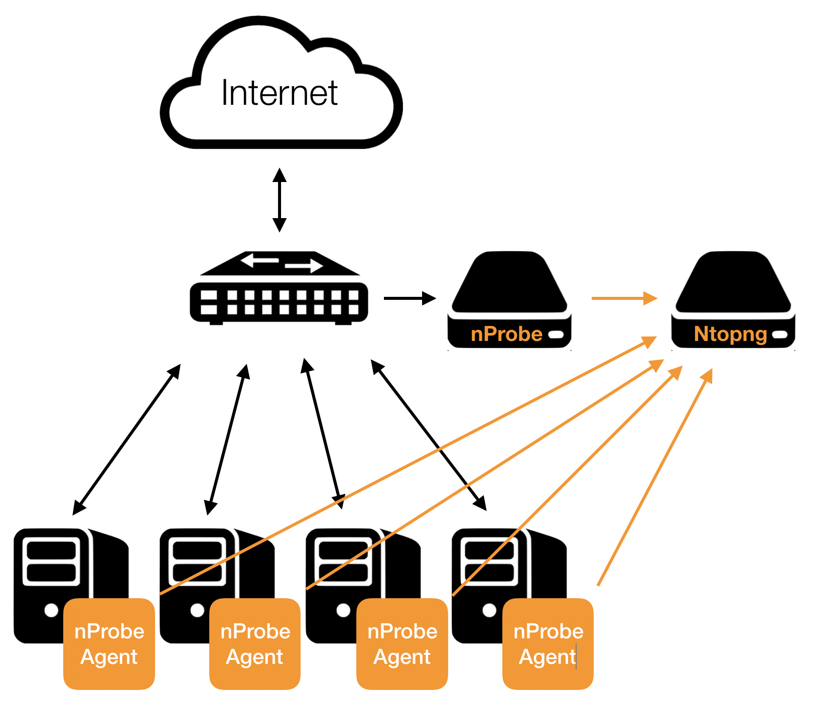
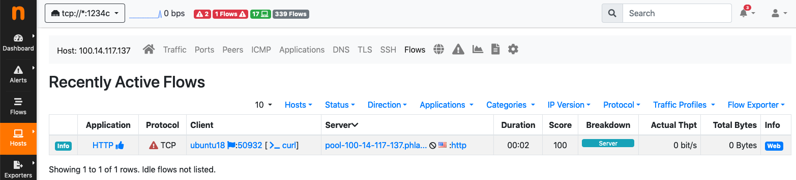
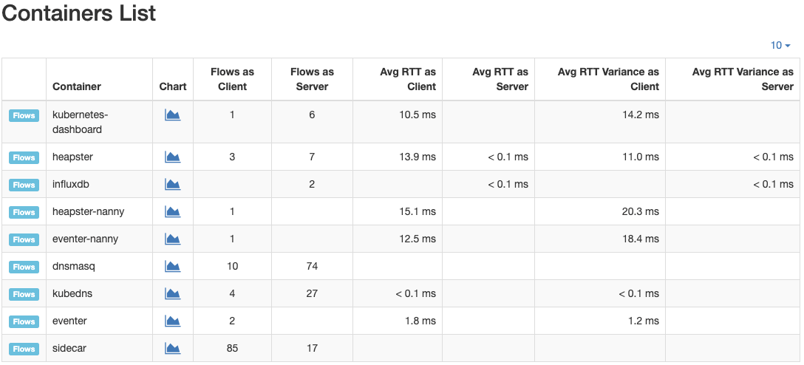
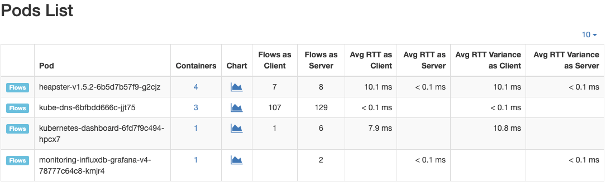

Использование ntopng с nProbe агентом
nProbe™ также реализует мониторинг процессов на основе событий с низкими издержками, называемый режимом агента. используя такие технологии, как eBPF. nProbe™ в режиме агента повышает видимость сети посредством системного самоанализа. Он обогащает классические сетевые данные, такие как IP-адреса, байты и пакеты с интроспектируемыми системой процессами, пользователями, контейнерами, оркестраторами и другие показатели эффективности.
ntopng можно использовать для анализа и визуализации данных процесса, сгенерированных nProbe. На рисунке ниже показано, как их можно комбинировать между собой.


Использование nProbe в режиме агента с ntopng
Ниже приведен минимальный рабочий пример конфигурации nProbe в режиме агента и ntopng для получения того, что схематично изображено на картинке выше. В примере предполагается, что оба ntopng и nProbe работают. на том же (локальном) хосте. Если они работают на разных машинах, IP-адрес 127.0.0.1 должен быть изменен на адрес хостинга машины ntopng. Вы даже можете запустить несколько агентов nprobe и позволить их экспортируют в тот же экземпляр ntopng.
ntopng Конфигурация
ntopng -i tcp://*:1234c -m "192.168.1.0/24"
Где:
-я указывает, какой порт ntopng должен прослушивать входящие данные (см. порт 1234, тот же, что и для nprobe ниже)
-м указывает интересующую локальную сеть.
nProbe Конфигурация агента
nprobe -i eno1 -n none --agent-mode --zmq tcp://127.0.0.1:1234 --zmq-probe-mode
Где:
–zmq указывает конечную точку ntopng ZMQ
–zmq-режим-зонда указывает, что nProbe откроет соединение с ntopng
–режим агента устанавливает режим агента для включения мониторинга процесса.
Варианты использования
В этом разделе приведены несколько вариантов использования агента nProbe и его интеграции с ntopng.
Отслеживание пользователей и процессов, стоящих за сетевой деятельностью
Нахождение пользователя, который пытался загрузить файл с хоста вредоносного ПО, или какой процесс он запускает, — один из вопросов, на которые ntopng может ответить при использовании в сочетании с nProbe™ Агентом.
Допустим, вы обнаружили определенные потоки к хосту, занесенному в черный список.

nProbe Агент и хосты из черного списка
Просто взглянув на список потоков, вы можете легко определить ответственного, которым оказывается пользователь. корень попытка выполнить загрузку с помощью процесса завиток.

nProbe Агент: потоки хостов занесены в черный список
На этом этапе можно выполнить дополнительную детализацию, щелкнув по потоку. Информация а потом Обзор чтобы получить доступ к идентификаторам процесса и пользователя, а также к другим деталям.

nProbe Агент: сведения о потоке хостов в черном списке.
Показатели сетевой активности и производительности для каждого контейнера и каждого POD
Проверка производительности конкретного контейнера или выявление истинных узких мест в виртуализированной ОС. инфраструктура — это еще один вопрос, на который ntopng может ответить, используя его в сочетании с агентом nProbe™. Это можно выявить деятельность и производительность контейнера, используя, например, измеренный показатель туда и обратно. время их общения.
Доступ к списку контейнеров возможен через Хозяева -> Контейнеры меню.

nProbe Агент: список контейнеров.
То же самое относится и к модулям: доступ к списку POD можно получить через Хозяева -> Стручки меню.

nProbe Агент: список модулей